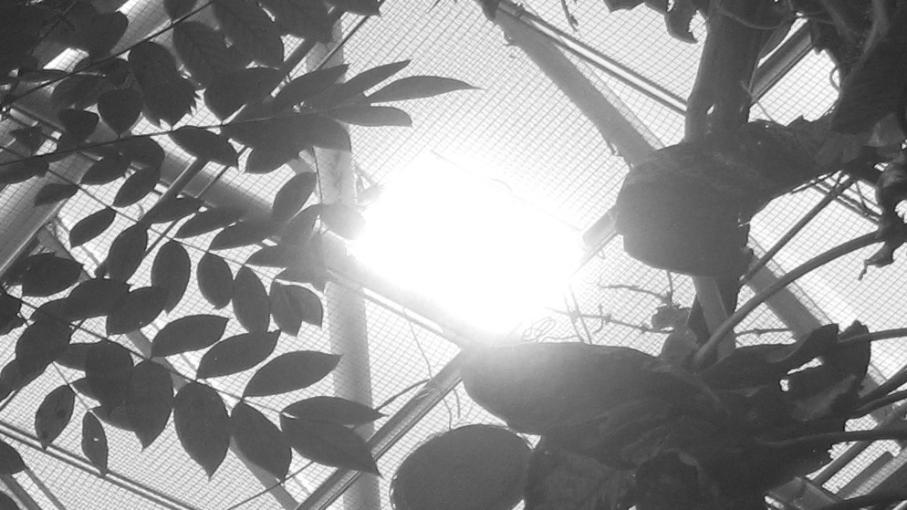

William Niels Møller Nielsen
(b. 1995, Denmark)
will-niels@hotmail.com
https://www.instagram.com/willyniels/
lives and works in Aarhus and Copenhagen, DK
Upcoming exhibitions
2027 Doze, duo show, Alrum, Aarhus, DK
2027 Afgang 2027, MA exhibition, Kunsthall Aarhus, Aarhus, DK
Selected exhibitions
2026 Why is music so heavy, Splab, Aarhus, DK
2026 KP26, Kunsthall Aarhus, Aarhus, DK
2025 KE 2025, Den frie udstillingsbygning, København, DK
2025 Tangled up in rooms, BA exhibition, Splab, Aarhus, DK
2024 Unfinished business - Splab, Aarhus, DK
2024 Gensyn, FAA projektrum, Odense, DK
2024 Plus one, Bugten, Aarhus, DK
2024 Shuffle, kh7 artspace, Aarhus, DK
2024 Beers, Byens kro, Copenhagen, DK
2023 2. års udstilling, Bugten, Aarhus, DK
2023 A sure thing, Fredericia kultur kaserne, Fredericia, DK
2023 Swap - FAA projektrum, Odense, DK
2022 Første års udstilling - Splab, Aarhus, DK
2022 The pavilion, KiT, Tromsø, NO
2020 Soccer, Skjold contempoary, Copenhagen, DK
Education
2025-2027 MFA, Det jyske Kunstakademi, DK
2022-2025 BFA, Det jyske kunstakademi, DK
2021 Vera School of Art and Design
2018 Kunsthøjskolen Holbæk
Grants and prices
2026 KP Price
